8+ Tahun pengalaman
100+ Uji sampel perbulan
3000+ Sampel telah diuji

99% Akurasi analisa
Laboratorium Biosains Politeknik Negeri Jember (POLIJE) adalah pusat riset dan layanan unggulan yang berdedikasi untuk kemajuan ilmu hayati terapan. Berada di bawah naungan institusi pendidikan vokasi terkemuka, kami menggabungkan kekuatan akademik dengan kebutuhan industri untuk menghadirkan solusi inovatif dan akurat.
Profil KamiLaboratorium Biosains Politeknik Negeri Jember (POLIJE) adalah unit layanan profesional yang menyediakan jasa analisis dan pengujian presisi tinggi di bidang biosains. Kami melayani kebutuhan industri, akademisi, dan instansi pemerintah dengan fokus pada sektor pertanian, pangan, dan lingkungan. Dengan dukungan keahlian dari civitas akademika POLIJE dan peralatan laboratorium yang canggih, kami menawarkan solusi berbasis riset untuk tantangan teknis Anda. Keunggulan kami terletak pada analisis mikrobiologi, kultur jaringan, dan identifikasi molekuler. Percayakan kebutuhan analisis Anda kepada kami untuk hasil yang cepat, akurat, dan andal.
Transformasi Kemandirian Politeknik Unggul Bidang Agroteknotropika Berdaya Saing Asean
8+ Tahun pengalaman
100+ Uji sampel perbulan
3000+ Sampel telah diuji
99% Akurasi analisa

“Profesional, cepat, dan akurat. Hasil analisis dari Lab Biosains POLIJE membantu kami mengambil keputusan strategis yang krusial untuk bisnis. Mereka adalah mitra riset yang sangat kami andalkan.”
“Fasilitasnya lengkap dan sangat terawat. Proses penyewaan lab untuk penelitian tugas akhir saya berjalan lancar berkat staf yang responsif. Ketersediaan alat modern di sini benar-benar menunjang riset saya.”

“Laboratorium yang sangat andal untuk analisis sampel lingkungan. Data uji limbah cair dari Lab Biosains POLIJE sangat akurat dan menjadi acuan utama dalam laporan audit lingkungan kami. Sangat profesional.”
Kepala Laboratorium
Titik Budiati
Administrasi
Alfan
Teknisi
Novita
Teknisi
Taufan
Teknisi
Diki
Teknisi
Reza

Teknisi
Hadi
Teknisi
Rosin
Teknisi
Mirma